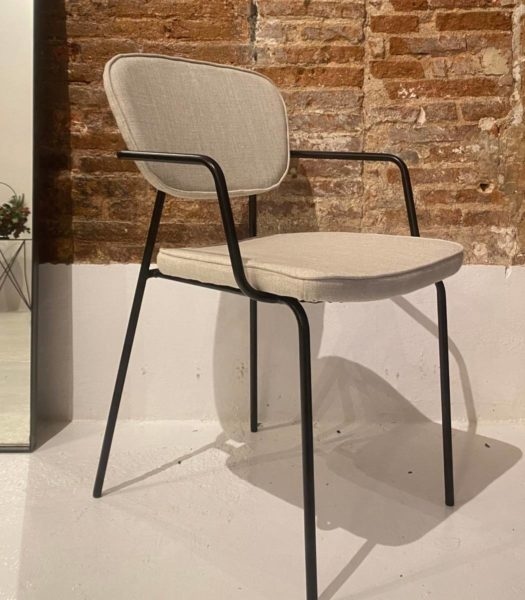

Silla A

Medidas totales: 55 X 54 X 84 cm
Silla con patas de hierro negro, tapizadas a medida.
130€ + IVA
*Otras telas, consultar precios



Silla con patas de hierro negro, tapizadas a medida.
130€ + IVA
*Otras telas, consultar precios